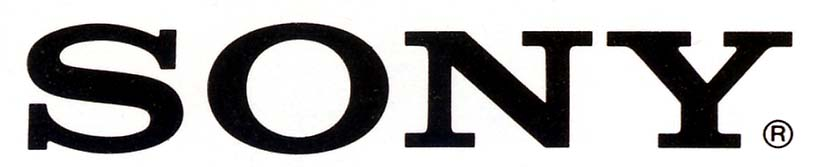
SONY （ソニー）
日本を代表するヘッドフォンブランド。フィリップスとともにコンパクト・ディスクの規格を提唱し、またいわゆる「ウォークマン」により軽量タイプのヘッドフォン・インナーイヤー型を定着させ、桁違いの超高級機を発売するなど、ヘッドフォン全体に与えた影響も大きい。
ヘッドフォンメーカーとしては、ダイヤフラムの素材に新機軸を導入するのに熱心であり、パラジウム蒸着（DR-Z7等）、金蒸着（MDR-CD7等）、アモルファスダイヤモンド蒸着（MDR-CD900等）、バイオセルロース（MDR-CD3000等）などを製品に導入してきた。
1970年代後半までの製品グループは「DR」で始まる型番であったが、1979年10月より現在と同じ「MDR」で始まる型番が登場した。その際に登場したMDR-3,5,7はその後の他社のヘッドフォン開発に大きな影響を与えた。特にMDR-3は初代ウォークマンのヘッドフォンとして有名。他にコンデンサー型ヘッドフォンの型番、「ECR」がある。
SONY
（ソニー）の製品を以下のように分類する。（この分類は個人的な意見で、メーカーの分類ではありません）
なおソニーの1970年以前の製品については資料が現時点では手元にほとんどない。
�T.DR型番のもの
�@〜1970年頃の製品
1970年代初頭時点では、ソニーは必ずしもヘッドフォンについて熱心なメーカーではなかった。
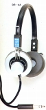
�Aシリーズ製品成立前の製品(〜1978年頃）
1970年代半ば頃からは、当時のヘッドフォンブームに合わせ、次第にモデル数が増えていった。「シリーズ製品成立前」としているがDR-35と45、DR-27と47、67は同一線上のデザインによる製品群である。
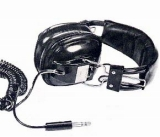
(DR-7)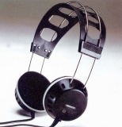
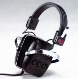
(左 DR-25 右 DR-45)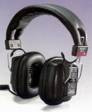
(DR-67)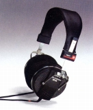
(DR-55)�BＭシリーズ
密閉型のモニター用ヘッドフォン。DR-M7を除き、コーン型。DR-M7はＺシリーズのドーム型ユニットを使用。当時流行した生録用モデル。
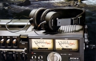
(DR-6M)�CSシリーズ
密閉型の音楽鑑賞用ヘッドフォン。コーン型の最後のシリーズ。シリーズ・トップモデルのDR-S7で6,500円と、比較的廉価なシリーズ。
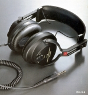
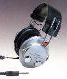
(左 DR-S4 右 DR-S7)�DZシリーズ
密閉型の音楽鑑賞用ヘッドフォン。大口径(50�o）ドーム型の高音質モデル。廉価版のDR-Z5で9,000円と、同時期の「Sシリーズ」のトップモデルDR-S7よりも高価な、上級機シリーズ。
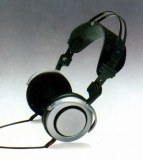
(DR-Z7)�Eその他
4チャンネルヘッドフォンや無線機等。DR-200C(*)は2000年以降まで続いた最後のDR型番モデル？
（4ch機） DR-41
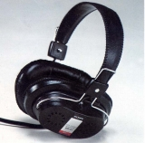
(DR-41)*DR-200C
1980年代に発売されたマイク付きのモデル。2000年過ぎまでカタログに残った。同じようなテクニカのATH-30COMは現役（2021年7月現在）。なお近年、同社のBluetoohヘッドフォンで再び「DR」の型番が使用されている。
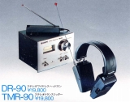
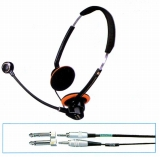
(左 DR-90 右 DR-200C)
＊DR-5A、DR-4M、DR-25、DR-Z6について豊永尚輝 氏所有機の画像を使用しました。ありがとうございます。
＊その他のDR型番の製品について
初期の製品と思われるものでDR-1という機種があり、エレガの同名のモデルににていると聞いたことがある。その他オークションなどでDR-2とDR-3を見かけたことがある。DR-3にはDR-3AとDR-3Cがあり、DR-3Cの方は10kΩ仕様のハイインピーダンス対応製品だった。これらについては現時点では価格、発売時期などがわからない。古いテープレコーダーの資料にオプションとして載っている可能性もあり、何かご存じの方がいらっしゃれば教えてください。
またDR-11というトーンコントロール、ステレオ/モノ切替機能付きのヘッドフォンも存在する。輸出モデルらしく、海外のサイトの情報では動電全面駆動型らしい。ヤマハのオルソダイナミック型風のドライバーの画像があった。管理人がオークションで見かけたものはボディカラーがアイボリーだったが、海外サイトのものはブラックモデルだった。
�U.ECR型番のもの
コンデンサー型ヘッドフォンのシリーズ。ECR-400〜600はエレクトレットコンデンサー型でソニーがユニエレクトレット振動膜と呼んだ膜エレクトレット型。ECR-800は純コンデンサー型の製品。
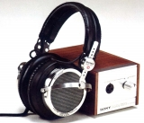
(ECR-500)
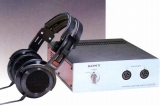
(右 ECR-800)
�V.MDR型番のもの
サマリュムコバルト磁石と高剛性・ハイコンプライアンス化したダイアフラムを採用したMDR-3等で始まった現行の型番。
�@H・AIR（ヘアー）シリーズ
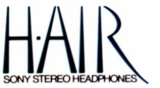
小型・軽量のオープンエア型から展開していったシリーズ。2000年以降まで続いたが（2001年 MDR-505等）、現在のカタログからは消えている。
(1)初期の製品群
1979年の秋にデビューしたMDR-3とその姉妹機。 ユニット径は23�o（MDR-7は28�o）。なお第2世代のウォークマン用のMDR-4(L1S,T)を除き他はまだ標準プラグの製品である。
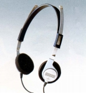
(MDR-3)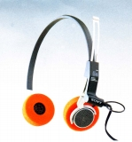
(MDR-5a)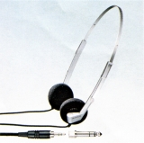
(MER-4T)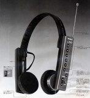
(MDR-FM7)→MDR-1について
(2)80年代上旬の製品群
H・AIR（ヘアー）シリーズの1981年頃デビューの第２世代。上級機（MDR-40T以上）ではユニット径を30�oに拡大した。またこの世代からミニプラグが標準となった。なお型番の末尾が「T」のモデルが純オーディオ向けモデルであるが、本体には「T」の記載は無い。
MDR-20T MDR-30T MDR-40T MDR-50T MDR-70T MDR-80T
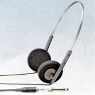
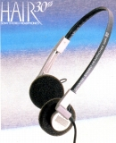
(左 MDR-50T 右 MDR-80T)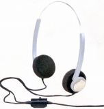
(MDR-30TV)(3)80年代中盤の製品群
MDR-20�U MDR-30�U MDR-40�U MDR-60�U MDR-80�U
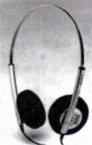
(MDR-60�U)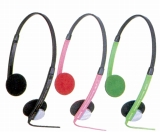
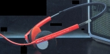
(左 MDR-31 右 MDR-71)(4)80年代下旬の製品群
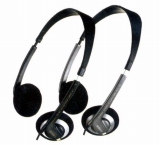
(MDR-62)(5)90年代上旬の製品群
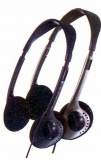
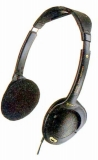
(左 MDR-34 右 MDR-94)＊この流れを汲む製品としてMDR-14を見かけたことがある。輸出専用モデルのようだ。
(6)90年代中盤以降の製品群
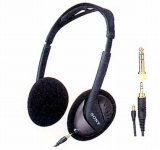
(MDR-75)＊この流れを汲む製品としてMDR-85がある。輸出専用モデルのようだ。ヘッドバンドが二重のモデルらしい。
�Aヘアー・モニター、ヘアー・ハイファイシリーズ
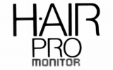
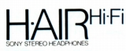
ヘアシリーズから派生した高音質モデル。従来の高級機であるコンデンサー型ヘッドフォンが製造中止になった為、このシリーズのMDR-CD7がしばらくソニーのフラグシップ・モデルを務めた。90年代に入り、ヘアシリーズに統合された。MDR-CD5〜7の「プロ・モニター」シリーズは密閉型、「ハイファイ」シリーズはオープンエア型である。
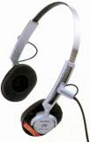
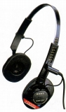
(左 MDR-CD5 右 MDR-CD7)
MDR-M33 MDR-M55 MDR-M66 MDR-M77
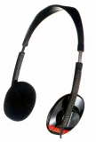
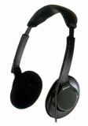
(左 MDR-M33 右 MDR-M66)�B折りたたみ型
ヘアシリーズから派生した折りたたみ型のモデルのシリーズ。MDR-A30LはMDR-30Tと同時に発表された姉妹モデルだった。「P・O・C・K・T H・AIR」と呼ばれていた。その後ヌードシリーズに近いドライバーを採用し、ユニットの向きを90度替えて前向きにする「バーティカル・イン・ザ・イヤー」方式になり、「ウェア」シリーズとして独立した。代表作はルイジ・コラーニデザインのMDR-A60。ソニーがカタログでコラーニデザインであるとしているのはMDR-A60のみであり、それ以外のモデルへの関与は不明。90年代に入り、MDR-A60 1機種となり、再びヘアシリーズに統合された。しかし、「MDR-A、MDR-W」の型番を継ぐ90年代以降のバーティカル型モデルもここに含める。
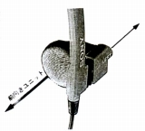
（バーティカル・イン・ザ・イヤー方式）(1)「P・O・C・K・T H・AIR」
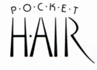
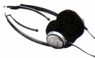
(MDR-A30L)
(2)「ウェア」シリーズのモデル
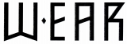
MDR-A40L MDR-A50L MDR-A60 MDR-W30L MDR-W50
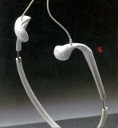
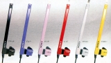
(左 MDR-A60 右 MDR-W30L)(2)90年代のモデル
MDR-A30SP MDR-A44SP MDR-A105SP MDR-W34SP
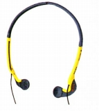
(MDR-A30)�Cデジタルモニターシリーズ
名機MDR-CD900を含むシリーズ。MDR-CD900の業務用機、MDR-CD900STはいまだ現役（2021/7月現在）。業務用の展開を除けば2世代で終わるが、２世代目のMDR-CD999は、50�oドライバー、渡りのケーブルをヘッドバンド内部に納めるコンシールド構造を採用し、MDR-Z900やMDR-CD3000のへの橋渡しのような役割を果たした。なおMDR-CD900STについては手元の資料（カタログ及び無線と実験1999年3月号記事）があり、記載するが、他のCD900派生の業務モデルやMDR-7506等については記載しない。
(1)第１世代
アモルファスダイヤモンド蒸着の振動板を採用したMDR-CD900を中心としたモニター機。第２世代のモデルの登場で生産中止となったが、MDR-CD900は第２世代機としばらく併売された。
MDR-CD100 MDR-CD300 MDR-CD500 MDR-CD700 MDR-CD900 （番外） MDR-CD900ST
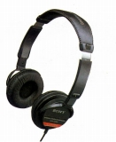
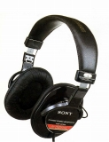
(左 MDR-CD300 右 MDR-CD900)(2)第２世代
MDR-CD900の40�o径振動板に代わり50�o径のアモルファスダイヤモンド蒸着の振動板を採用したMDR-CD999を中心としたモニター機。なお販売開始時はサマリュムコバルト磁石であったが、ネットの情報では、後期モデルはネオジウム磁石に変更されたとなっている。（ただし現在の所、真偽はカヤログ等では確認できていない 。）なお、このシリーズの外装プラスチックは非常に薄く、かつ経年劣化がおきやすく、生存率は低い。
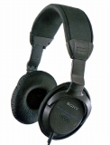
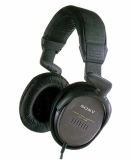
(左 MDR-CD555 右 MDR-CD999)�Dデジタルリファレンスシリーズ
上位機種にバイオセルロース振動板を採用した密閉型のシリーズ。ソニーでネオジウム磁石を最初に導入したシリーズでもある（一部のローエンド機種を除く）。
トップモデルのMDR-CD3000を除くと3世代あり、MDR-CD3000のダウングレード版のMDR-CD1000→MDR-CD950→の「＊50」型番シリーズ、ベクトラン配合バイオセルロース振動板を採用したMDR-CD1700→MDR-CD770→の「＊70」型番シリーズ、着脱式のケーブルを採用したMDR-CD2000→MDR-CD780→の「＊80」型番シリーズがある。
なおソニーのカタログでは別枠とされているが、超高級機MDR-R10についてはこのシリーズに含める。
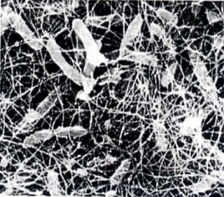
（バイオセルロース）
(1)フラグシップモデル
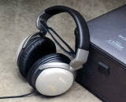
(左 MDR-CD3000 右 MDR-R10)
(2)第1世代のモデル
MDR-CD250 MDR-CD350 MDR-CD450 MDR-CD550 MDR-CD750 MDR-CD850 MDR-CD950 MDR-CD1000
(左 MDR-CD250 右 MDR-CD1000)
(3)第2世代のモデル
MDR-CD270 MDR-CD370 MDR-CD470 MDR-CD570 MDR-CD770 MDR-CD1700
(左 MDR-CD270 右 MDR-CD1700)
(4)第3世代のモデル
MDR-CD280 MDR-CD380 MDR-CD480 MDR-CD580 MDR-CD780 MDR-CD2000
(左 MDR-CD280 右 MDR-CD2000)
�Eスタジオモニター(Z)シリーズ
デジタルモニターシリーズの後継シリーズ。ネオジウム磁石を導入した密閉型のシリーズ。MDR-CD900を除けば比較的短命な機種が多いデジタルモニターシリーズとは対照的に、ロングランモデルが多い。トップモデルMDR-Z900の後継機900HDは２０１０年代まで続いた。
なおDJモデルであるMDR-Z700DJ等もこのシリーズに含める。
(1)スタジオモニターモデル
MDR-Z150 MDR-Z200 MDR-Z300 MDR-Z400 MDR-Z600 MDR-Z900
(左 NDR-Z300 右 MDR-Z900)
(2)DJモデル
(MDR-Z700DJ)
�Feggo（エゴ）シリーズ
可搬性・屋外使用に特化したモニターシリーズ。形状記憶合金製でコンパクトな収納を可能とするヘッドバンド、外部音を取り込む「サウンドイン・ダイアフラム」、マイクロプラグ対応などの特徴があった。後継モデルは無い。
MDR-D11 MDR-D22 MDR-D33 MDR-D55 MDR-D66 MDR-D77
(左 MDR-D11 右 MDR-Ｄ66)
�GN・U・D・E（ヌード）シリーズ
イヤレシーバー（イヤホンタイプ）のシリーズ。80年代前半の小型の耳掛け型やMDR-ED、MDR-EXモデルもこのシリーズで扱う。「N・U・D・E（ヌード）」は「Natural
Unequalled Dynamic
Ear」の頭文字のようだ。なお初期のMDR-E型番モデルには「耳掛け」タイプのものが存在したが、これらは「N・U・D・E」とは別のシリーズ名の為、区分する。
なお、モノラルタイプやSONY製のポータブル機器専用機、ポータブル機器の付属品は取り上げないつもりだったが、アクセス解析で探す方がいるようなので可能な範囲で画像を公開する。
(1)200番台のモデル
20�oを下回るユニットでMDR-E252からスタートしたインナーイヤタイプ。ただし発売時期ではトリオ（後のケンウッド）のKH-0.5に後塵を拝した。MDR-E262から「ソニー・アコースティック・ターボ」と呼んだ低域増強用のダクトを備えるようになる。またサファイヤ・ダイヤフラムのMDR-E282で高級機路線を確立した。
MDR-E222 MDR-E222EX MDR-E252 MDR-E255 MDR-E262 MDR-E265 MDR-E272 MDR-E282
(左 MDR-E252 右 MDR-E282)
＊MDR-E282について「Collectable Headphones」のKana氏所有機の画像を使用しました。ありがとうございます。
(2)400番台のモデル
当時のトップモデルMDR-CD900と同じアモルファスダイアモンドダイアフラムを採用したMDR-E484などのシリーズ。
MDR-E424 MDR-E444 MDR-E464 MDR-E484
(左 MDR-E444 右 MDR-E484)
(3)500番台のモデル
トップモデルをMDR-E484に据えたままで、ダクトの改良などを行ったシリーズ。このあたりからドライバーのさらなる小口径化（16→13.5�o）が始まった。
MDR-E515 MDR-E535 MDR-E552DM MDR-E555 MDR-E557 MDR-E565 MDR-E575
(MDR-E575)
(4)700番台のモデル(*)
MDR-E747MP （番外） MDR-E737LP MDR-E755
*700番台のモデルについて
700番台のモデルについては1995〜1997年のカタログが手元にないため、MDR-E747MPのみしかわからない。700番台はポータブル機器付属品等に振られた番号かもしれない。番外として最近のローエンド機種MDR-E737LPと海外版製品らしきMDR-E755をあげる。
(5)800番台のモデル
バイオセルロース・ダイアフラムのMDR-E888などのシリーズ。200〜500番台のシリーズに比べるとカーラバリエーションは減った。
MDR-E837 MDR-E838 MDR-E847 MDR-E848 MDR-E868 MDR-E888
(MDR-E888)
(6)MDR-ED、MDR-EXモデル
＊その他のN・U・D・E（ヌード）シリーズについて
手持ちの資料で確認できる範囲では以下のようなモデルが存在する。
モノラル型耳掛タイプ
MDR-E5、MDR-E5LC(ロングコードバージョン）
モノラル型イヤホンタイプ
MDR-E121 MDR-E122 MDR-E123 MDR-E140C MDR-E141 MDR-E142 MDR-E143 MDR-E195 MDR-E211 MDR-E212 MDR-E213M
リモコンウォークマン専用
MDR-EW80 MDR-EW90 MDR-E454RV MDR-E472RV MDR-E472RVF MDR-EW600 MDR-EW702 MDR-EW702F
リモコンラジオ専用
MDR-ER701M MDR-ER901
�Hネックバンドタイプ
MDR-G61 MDR-G62SL MDR-G72SL MDR-G82SL
(左 MDR-G61 右 MDR-G82SL)
�Iその他
初期の耳掛けタイプや聴診器型、フルオープン型のMDR-F1、SONY初の赤外線無線機MDR-IF5Kなど
(1)耳掛タイプ
H・AIR（ヘアー）シリーズの初期モデルの流れを汲む23�oユニットでスタートした耳掛けタイプ。「ear」シリーズと名付けられた。MDR-E33でスタートし、やがてMDR-E-22が追加されたが、それ以降のモデルはモノラルタイプのMDR-E5以外は確認できない。耳掛けタイプはしばらく姿を消していたが、2000年にMDR-Q33SLが発売された。
(MDR-E33)
(MDR-Q33SL)
(2)聴診器型
やはりH・AIR（ヘアー）シリーズの初期モデルの流れを汲む23�oユニットで作られた聴診器型。「H・AIR・PIN」シリーズと名付けら、モノラルタイプ(MDR-U5M）も存在した。ソニーでは当時、「アンダーバンド型」とも読んでいた。似た機種では他社ではゼンハイザーのHD-44などの例がある。
(MDR-U5L2)
(3)AVモニターシリーズ
当サイトでは、原則として既存の中級〜ベーシックモデルをロングコード化した、いわゆる「AV」モデルは扱わない。しかしソニーのAVモニターシリーズの初期モデルは、ボディの基本こそMDR-CD500〜100と共用のパーツが使用されているが、スペックは別なので取り上げる。なおこの後の「デジタルリファレンスシリーズ」をベースとしたAVモデルは単に「AVシリーズ」と呼ばれ、型番も「MDR-AV」となり、「MDR-V」は一代で消えた。
(MDR-V606)
(4)その他
MDR-F1はNAPOLEXやジャクリン・フロートのような「フル・オープン」型。MDR-1F5Kは量産国産機で最初に赤外線式無線を採用したモデル。
(左 MDR-F1 右 MDR-IF5K)